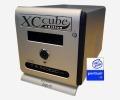

| Themen und Tipps |
| Allgemeines |
| Elektrizit�t |
| Heizung & Sanit�r |
| Mobilit�t |
| Fakten: Energie |
| Fakten: Klima |
| Fakten: Umwelt |
Tipps und Infos zu Computern und EDV
| TIPP Energie sparen bei Computern | |
|
Unsere lieben Computer sind leider
gro�e Energiefresser. Um ihren Verbrauch zu z�hmen, sind unter nachfolgendem Link ein paar Tipps zusammengetragen. |
|
| auf Unterseite weiterlesen ... | |
| TIPP Flachbildschirme dunkler einstellen | |
|
Im Grunde sind Flachbildschirme gegen�ber ihren gro�en Br�dern,
den R�hrenbildschirmen, bereits um einiges sparsamer. Doch es
l�sst sich noch mehr einsparen, indem der Flachbildschirm
dunkler eingestellt wird. Denn von Werk aus ist die Helligkeit in vielen F�llen sehr hoch eingestellt - oftmals heller als wirklich ben�tigt wird. Folgende Beispiele belegen den Einspareffekt:
Bei R�hrenbildschirmen und R�hrenfernsehern funktioniert diese Ma�nahme �brigens auch, einfach ausprobieren und messen! |
|
| TIPP Nutze die elektronische Post! | |
|
Es gibt nur noch wenige Haushalte oder Firmen, die nicht �ber
Computer mit Internetanschluss verf�gen. Diese
Kommunikationsm�glichkeit sollte daher bevorzugt genutzt
werden. Sie bietet den Vorteil, dass Informationen viel schneller am Empf�nger ankommen als dies auf herk�mmlichen Weg m�glich w�re. Doch worin besteht der Energiespareffekt? Auf herk�mmlichem Weg wird z.B. ein Dokument in einer Firma A am Computer erstellt, ausgedruckt, zur Post gebracht und von dieser an den Bestimmungsort B zugestellt. An diesem werden die Informationen in manchen F�llen wieder eingescannt und in einem Computersystem der Firma B archiviert. W�rde das Dokument direkt per Email versandt, so w�rde zwar Energie f�r die Zustellung der E-Mail ben�tigt, doch diese Energiemenge ist sehr gering. Das ausdrucken, transportieren und eventuelle einscannen eines Dokumentes ben�tigt eine weitaus h�here Energiemenge. Hierbei sollte nicht vergessen werden, dass f�r die Herstellung von Papier auch Energie ben�tigt wird (ca. 0,05 kWh pro Blatt Frischfaserpapier; ca. 0,02 kWh pro Blatt Recyclingpapier; Quelle: http://www.papiernetz.de). |
|
| auf Unterseite weiterlesen ... | |
| INFO Geringe Betriebskosten: Laptops, Barebone-PCs und MiniMacs | |
|
Ein normaler Computer mit gro�em R�hrenmonitor bezieht gnadenlos
Energie aus der Steckdose: �ber 200 Watt im Normalbetrieb ist leider keine Seltenheit! Da auch die meisten Computernetzteile - vor allem billige Netzteile - erschreckend geringe Wirkungsgrade von nur 50% bis 75% haben, geht schon im Netzteil sehr viel Energie verloren. Ben�tigen die Computerkomponenten wie zum Beispiel CPU, Festplatte, Mainboard,... zusammen 60 Watt, so wird bei 50% Wirkungsgrad des Netzteiles nochmals 60 Watt im Netzteil verbraten! Wesentlich sparsamer - aber oftmals genauso schnell - sind Laptops, da diese insgesamt nur ca. 30 bis 50 Watt Leistungsaufnahme ben�tigen. Leider sind Wartungen und Aufr�stungen bei Laptops entweder teuer oder gar nicht m�glich. Auf dem Markt sind auch Barebone-PCs ("Mini-Computer") mit Laptop-Prozessoren erh�ltlich, d.h. man erh�lt die hohe Sparsamkeit eines Laptops, aber gleichzeitig den Vorteil, dass Komponenten wie Speicher, Festplatte, usw. schnell und kosteng�nstig ausgetauscht werden k�nnen. Eine weitere Alternative ist der Apple MiniMac, welcher bzgl. Leistungsaufnahme nicht zu �bertreffen ist. ausgeschaltet: 0,8 Watt Ruhezustand: 3,2 Watt Leerlauf: 18,3 Watt CD und HDD Zugriff: 24,9 Watt Vollast: 35,8 Watt Wer einen sparsamen Computer f�r reine Office- und Internet-Anwendungen sucht, sollte sich diesen genauer anschauen. Bei h�ufigem Gebrauch kann sich eine solche Investition schnell rechnen. |
 |
| INFO Eine gute Investition: Laserdrucker | |
|
Oft werden Kunden mit extrem g�nstigen Tintenstrahldruckern
gelockt. Doch diese sind nur in der Anschaffung billig - also Finger weg davon! Druckt man h�ufig und viel, so entstehen hohe Kosten f�r neue Patronen und viel M�ll durch die leeren Patronen. Aber auch wenn man nur selten druckt, hat man Probleme: Die Tinte kann bei seltener Benutzung schnell austrocknen. Da vergeht einem schnell die Lust! Laserdrucker lohnen sich daher immer, auch wenn diese in der Anschaffung mehr Geld kosten. Weiterer Vorteil: Laserdrucker drucken schneller und das Druckbild ist oft besser. Zusammengefasst die Gr�nde, weshalb man Tintenstrahldrucker meiden sollte:
�brigens ben�tigen Laserdrucker w�hrend des Druckvorgangs mehr elektrische Energie als Tintenstrahldrucker, doch die dadurch enstehenden Mehrkosten sind vernachl�ssigbar, da sie sehr gering sind. Einige Tonerkartuschen sind �brigens direkt nachf�llbar, falls diese einen Stopfen besitzen. Dieser kann direkt sichbar oder an einer Seite versteckt sein. So l�sst sich bares Geld sparen, da Toner in einer Flasche um einiges g�nstiger als eine neue Tonerkartusche ist. Dreck und Tonerstaub sind komplett vermeidbar, falls die Tonerflasche �ber einen spritzen�hnlichen Aufsatz verf�gt. Was man auch beachten sollte: Drucker nach dem Betrieb ausschalten! Am besten per Steckerleiste, da viele Drucker leider keine richtigen Netzschalter besitzen. Insbesondere Laserdrucker k�nnen im Standbybetrieb eine hohe Leistungsaufnahme ("halten der Betriebstemperatur" aufweisen. |
|
| INFO Flachbildschirme - eine Alternative f�r R�hrenbildschirme? | |
|
Ich hatte 2004 die Idee, dass ich mir etwas besonderes leisten
k�nnte. Da mir mit der Zeit mein Bildschirm zu klein wurde und
er stark flimmerte, kam ich auf die Idee, mir einen
Flachbildschirm zuzulegen. Der Preis von 348 Euro war hoch, aber ich wollte etwas besonderes besitzen :-) Das Gute: Er ben�tigt 60 Watt weniger Leistung als mein alter R�hrenmonitor! (alter 17 Zoll Monitor: 80 Watt, Flachbildschirm nur 20 Watt) Die Preise f�r TFTs sind inzwischen stark gefallen. Dennoch dauert daher sehr lange, bis sich die Anschaffungskosten amortisiert haben, wie das folgende Rechenbeispiel zeigt: 0,060 kW x 8 Stunden t�glich x 365 Tage x 0,18 Euro/kWh = rund 31,54 Euro Ersparnis pro Jahr! Setzt man f�r die Anschaffungskosten eines TFT 200 Euro an, h�tte sich der Kauf in diesem Beispiel in 6,3 Jahren amortisiert. Die Hintergrundbeleuchtungen von TFTs haben eine Lebenserwartung von ca. 50000 Stunden, also etwa 5,7 Jahre bei durchgehender Nutzung. Bei hoher t�glicher Nutzung kann sich der Kauf eines TFTs also lohnen. Andernfalls sollte man zuerst warten, bis der aktuelle R�hrenmonitor defekt ist und sich erst dann einen TFT als Ersatz kaufen. Man sollte n�mlich bedenken, dass jeder TFT auch bei der Produktion eine gro�e Menge Energie ben�tigt! Wichtiger Hinweise: Flachbild-Fernseher (LCD-TV) sind keinesfalls so sparsam wie TFTs. LCD-TVs ben�tigen meistens genausoviel - manchmal sogar mehr - Energie als vergleichbare R�hrenfernseher! An dieser Stelle auch eine Warnung vor Plasma-Fernsehern: Diese ben�tigen meist bis zu 300 Watt - also lasst blo� die Finger von diesen "Heizungen"! Vorerst besser beim alten R�hrenfernseher bleiben. |
|
| INFO Abw�rme aus Serverr�umen f�r Heizzwecke nutzen | |
|
Die von Serverr�umen (Server, Switches, Router,...) erzeugte
Abw�rme muss nicht ungenutzt in die Umgebung abgegeben werden.
Sie kann dazu genutzt werden, B�ror�ume, Produktionshallen und
weitere in der N�he befindliche Geb�ude zu beheizen. Bei der Planung von neuen Rechenzentren sollte dies in Zukunft mehr ber�cksichtigt werden, um die Abw�rme der Rechenzentren m�glichst gut ausnutzen zu k�nnen. Beispiel: Von Musikhaus Thomann erhielt ich die Information, dass das gesamte Thomann-Verwaltungsgeb�ude zu �ber 90% mit der Abw�rme eines Serverraumes in Kombination mit einer W�rmepumpe beheizt wird. siehe auch: http://www.coltinfo.co.uk/.../thomann |
|
| Suchen... |
| Community |
| Links |
|
|
| Allgemeines |
| Homepage weiterempfehlen an ... |